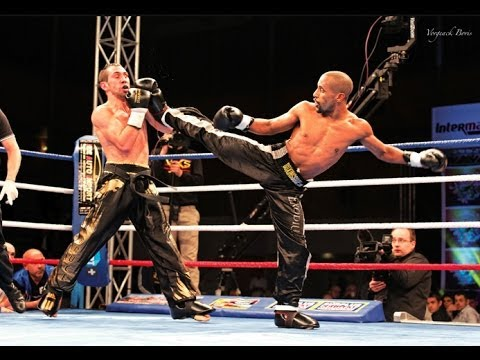
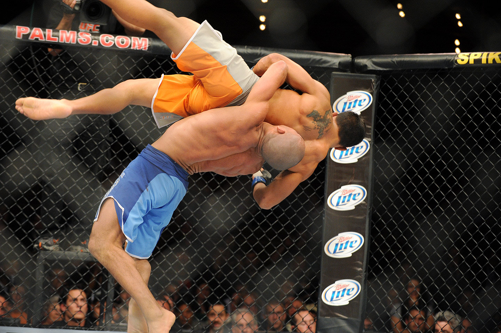
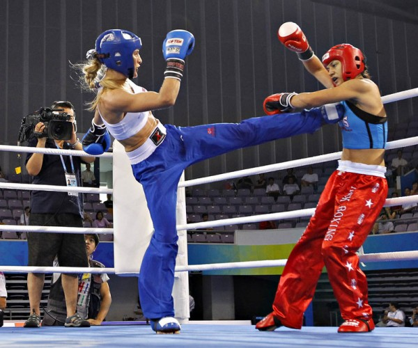

| 3 Puntos | 2 Puntos | 1 Punto |
| Patada en la cara en salto/Barrido que derriba | Patada en la cara desde el suelo/Barrido que desequilibra con técnica | Técnica de mano al cuerpo/Técnica de mano a la cara/Técnica de pie al cuerpo/Técnica de pie a la cara |
|  |  |  |
| Cinturón blanco | Cinturón amarillo | Cinturón naranja | Cinturón verde | Cinturón azul | Cinturón marrón | 1º GRADO - Negro | 2º GRADO - Negro | 3º GRADO - Negro | 4º GRADO - Negro | 5º GRADO - Negro | 6º GRADO - Negro(Grado honorífico) | 7º GRADO - Negro(Grado honorífico) | 8º GRADO - Negro(Grado honorífico) | 9º GRADO - Negro (Grado honorífico Master) |
| Observar las reglas del full contact | Respetar a los profesores, superiores, semejantes e inferiores | No dar mal uso al full contact | Ser un campeón de la libertad y la justicia | Construir un mundo más pacífico |